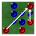
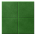

Reversi is a two player board game played with colored pieces on a board divided into 64 squares. To win the game you need to have more pieces on the board than your opponent.
The board starts with two red pieces and two blue pieces in the center. Your pieces are red and your opponent's are blue. You should also see four translucent red pieces which show the four squares where you are allowed to place one of your pieces; moves are only allowed where at least one of your opponent's pieces will be flipped.
To play the game touch one of the translucent red pieces on the board to make your move. You will see your new piece appear and one of the blue pieces flip over to become one of your red pieces. The blue piece is flipped because it is in a line, straight or diagonal, between two of your red pieces. While the blue player is thinking you will see some translucent blue pieces showing the blue player's legal moves.
Once the blue player has placed a piece it will be your turn again. play continues to alternate until one player cannot move.
The winner is the player with the most pieces.
In addition to the game board, the main screen shows the current status of the game plus a progress indicator that appears when the computer is thinking. There are also three or four buttons depending on the screen size.
The options menu offers a variety of ways to customize game play.
| Swap Players |
|  | Difficulty |
| Change Pieces |
|  | Change Board |
| Show or Hide Legal Moves |